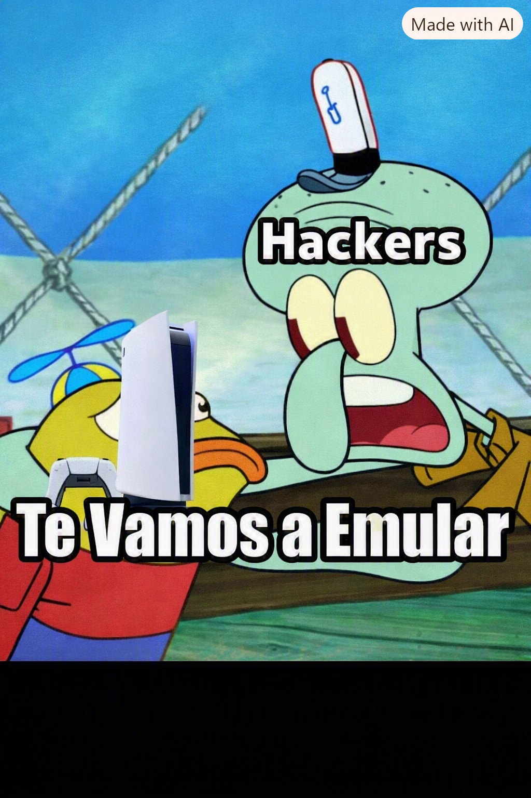

Para saber si la PS5 se va a emular tenemos que mirar el proyecto de KytyPS5 ya que es el proyecto que mas a avanzado para poder emular la play, en las dos ultimas semanas El creador del proyecto logro ejecutar Gta IV en pc en 40-60 fps aunque todavia no es estabel. Es el proyecto que mas a podido avazar para emular PS5
KytyPS5 ya ha podido emular varios juegos de manera exitosa como:

KytyPS5 y SharpEmu no se debe a una sola cosa, los desarrolladores del emulador empezaron el proyecto por dierentes motivos. Estos motivos son: Mejor hardware de PC → las CPU y GPU actuales tienen suficiente potencia para afrontar una emulación tan exigente. Mayor conocimiento de la PS5 → después de varios años desde su lanzamiento, los desarrolladores entienden mejor su arquitectura. Experiencia con PS4 → proyectos como shadPS4 aportaron conocimientos que sirven como base. Código abierto → proyectos como KytyPS5 y SharpEmu permiten que muchos desarrolladores colaboren. Mejor traducción de la GPU → avances con Vulkan y los shaders permitieron que los juegos empezaran a renderizar correctamente. Efecto bola de nieve → solucionar un problema puede hacer funcionar muchos juegos a la vez. Mayor interés de la comunidad → juegos como GTA V y la expectativa por GTA VI aumentaron mucho el interés en la emulación.